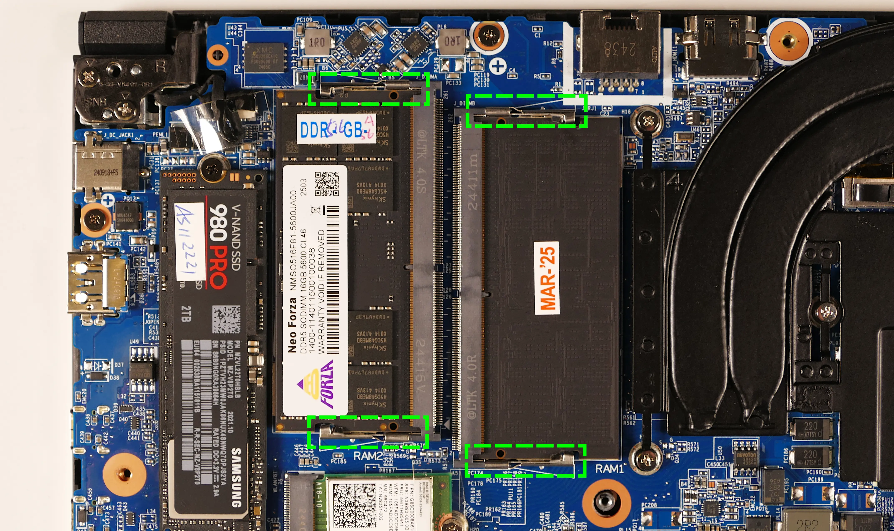
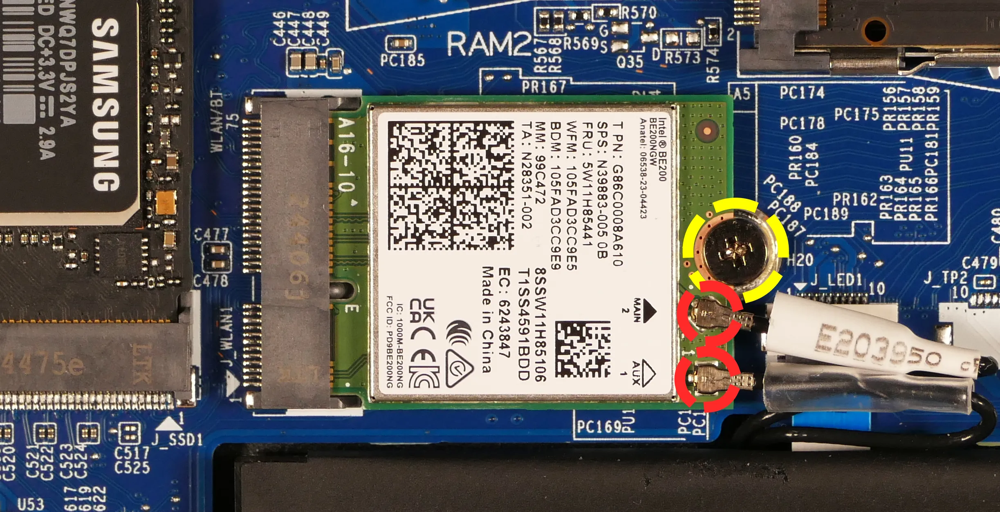
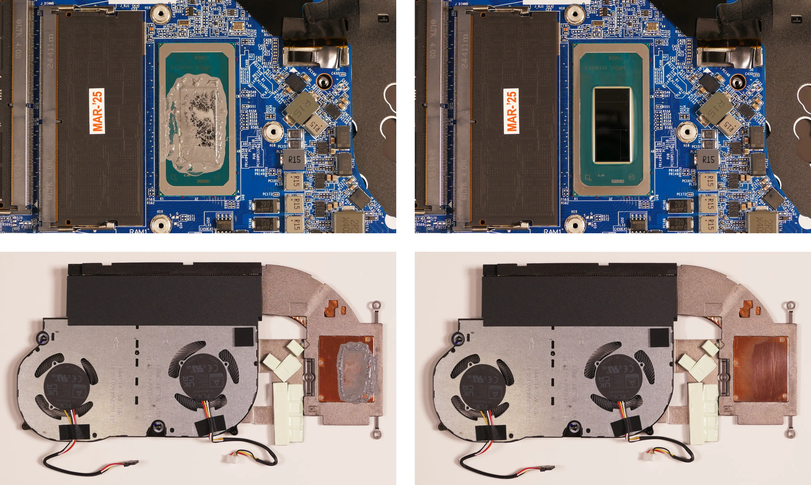
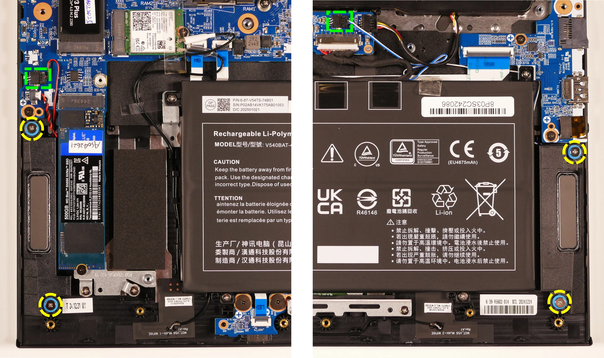
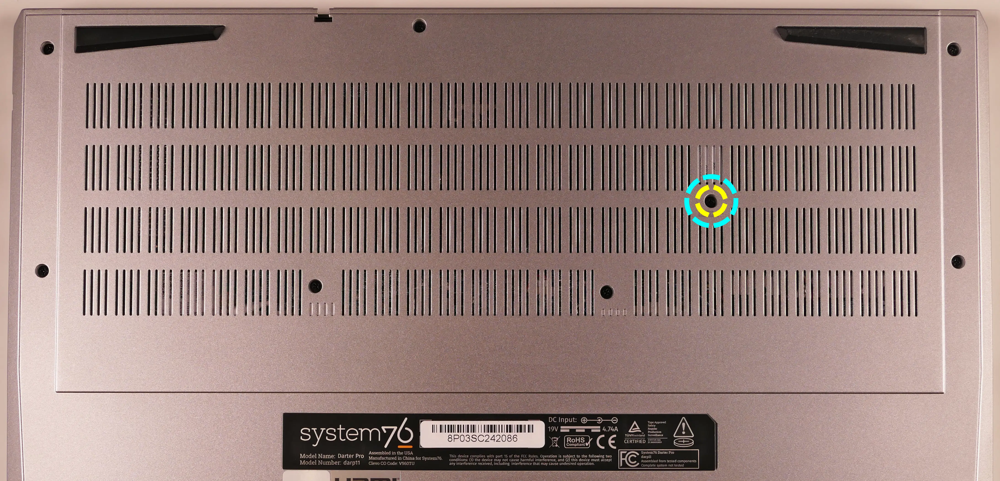
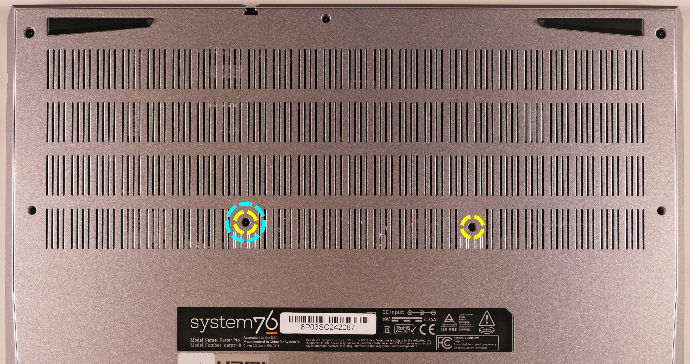
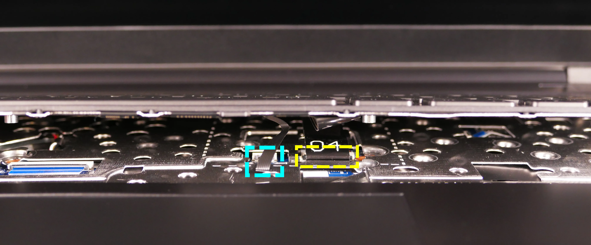
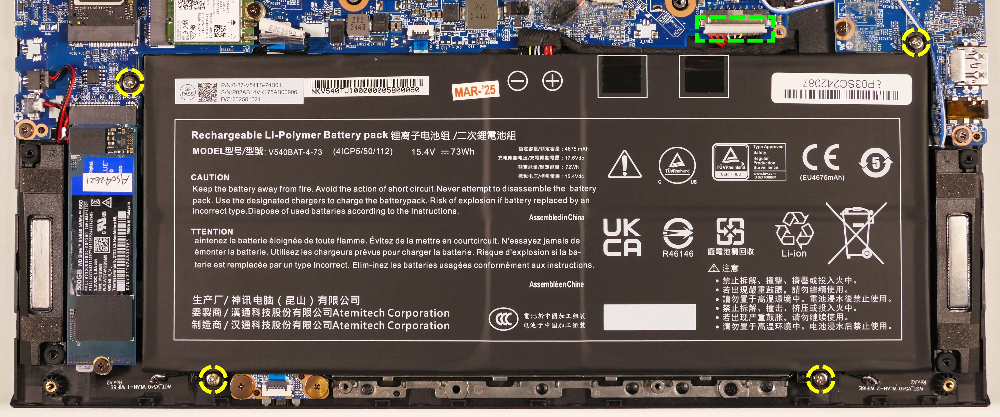

Darter Pro (Parts & Repairs)
Many components in your Darter Pro can be upgraded or replaced as necessary.
This page contains photos and part numbers for both the 16" model (darp11) and the 14" model (darp11-b). Unless otherwise noted, photos are of the 14" model (darp11-b), and general component locations are the same between both models.
Follow these step-by-step guides for instructions:
- Removing the bottom cover
- Replacing the RAM
- Replacing an M.2/NVMe SSD
- Replacing the WiFi/Bluetooth module
- Replacing the CMOS battery
- Replacing the fans/heatsink/thermal paste
- Replacing the speakers
- Replacing the keyboard
- Replacing the battery
Removing the bottom cover:
Removing the cover is required to access the internal components. Prior to removing the cover, ensure the AC power is unplugged and all peripherals (including SD cards and USB drives) are unplugged or removed from the system.
Part numbers:
- 16" (darp11) bottom panel:
6-39-V56T3-012 - 14" (darp11-b) bottom panel:
6-39-V54T3-012
Tools required: Cross-head (Phillips) screwdriver
Time estimate: 7 minutes
Difficulty: Easy ●
Steps to remove the bottom cover:
- Place the machine lid-side down.
- Use a soft surface (such as a towel) to avoid scratches.
- Remove the bottom panel screws.
- On the 16" model (darp11), there are 13 screws of the same size.

- On the 14" model (darp11-b), there are 11 screws; the back corner screws are slightly larger.

- On the 16" model (darp11), there are 13 screws of the same size.
- Pull the bottom panel off, starting from the hinges in the back.

Replacing the RAM:
The Darter Pro 10 supports up to 96GB (2x48GB) of DDR5 SO-DIMMs running at 5600MHz. If you've purchased new RAM, need to replace your RAM, or are reseating your RAM, follow these steps.
Tools required: Cross-head (Phillips) screwdriver
Time estimate: 10 minutes
Difficulty: Easy ●
Steps to replace the RAM:
- Follow the steps above to remove the bottom cover.
- Press the small tabs on both sides of the RAM simultaneously. The RAM should spring up to an angle.

- Remove the RAM from the slot.
- Insert the new RAM (or reseat the existing RAM) by placing it into the keyed slot and pressing down until it clicks into place.
Replacing an M.2/NVMe SSD:
This model supports two M.2 SSDs. Both slots are size 2280 and support PCIe NVMe Generation 4.
Tools required: Cross-head (Phillips) screwdriver
Time estimate: 10 minutes
Difficulty: Easy ●
Steps to replace the M.2 drive:
- Follow the steps above to remove the bottom cover.
- Unscrew the retainer screw opposite the M.2 slot.
- SSD-1 is closest to the RAM (pictured on the top.)
- SSD-2 is closest to the battery (on the bottom.)

- Remove the existing M.2 drive by pulling it out of the slot.
- The SSD-1 slot allows lifting the drive up at an angle before removing (or re-inserting) it.
- The SSD-2 slot requires sliding the drive out of (or into) the slot parallel to the motherboard.
- Insert the new M.2 drive into the slot and hold it in place.
- Replace the retainer screw.
- If a square thermal pad was present on the old drive, transfer it to the new drive.
- If you are using a slot for the first time, you can optionally place a rectangle thermal pad adjacent to the SSD slot on the bottom panel. Peel off the blue and clear plastic backings from either side of the thermal pad before applying it.

- If you are using a slot for the first time, you can optionally place a rectangle thermal pad adjacent to the SSD slot on the bottom panel. Peel off the blue and clear plastic backings from either side of the thermal pad before applying it.
Replacing the wireless card:
Your Darter Pro's WiFi and Bluetooth are both handled by the same module. It is a standard M.2 2230 slot with PCIe and USB interfaces (E-key).
Part numbers:
- The standard wireless card is an Intel
BE200.
Tools required: Cross-head (Phillips) screwdriver
Time estimate: 12 minutes
Difficulty: Medium ●
Steps to replace the WiFi/Bluetooth module:
- Follow the steps above to remove the bottom cover.
- Locate the wireless module. Remove any clear tape that is securing the wires.

- Gently remove the two antennas (highlighted red above) by pulling them up and away from the wireless card.
- Remove the retaining screw opposite the M.2 slot, highlighted yellow above.
- The wireless card will pop up at an angle. Remove the card from the M.2 slot.
- Insert the new wireless card into the M.2 slot at an angle.
- Replace the retaining screw.
- Attach the two antennas by aligning the circular fittings and pressing onto the wireless card. The connectors will snap into place. Use caution when attaching the connectors; the pins can bend, break, or snap.
Replacing the CMOS battery:
The CMOS battery supplies power to the system's CMOS chip. UEFI settings and the computer's hardware clock are stored on the CMOS. If your system doesn't boot, you can reset the CMOS to force a low-level hardware reset. If your clock is constantly resetting, it's likely your CMOS battery needs to be replaced.
Warning (ingestion hazard): Keep batteries out of reach of children. Death or serious injury can occur if ingested. If a battery is suspected to be swallowed or inserted inside any part of the body, seek immediate medical attention. In the US, you can also call the National Battery Ingestion Hotline for guidance: 1 (800) 498-8666
Part numbers:
- The CMOS battery is a standard 3V KTS CR2032W battery.
Tools required: Cross-head (Phillips) screwdriver
Time estimate: 12 minutes
Difficulty: Easy ●
Steps to replace the CMOS battery:
- Follow the steps above to remove the bottom cover.
- If you are replacing the CMOS battery, remove SSD-2 to expose the CMOS battery, then pull it away from the adhesive holding it to the case.
- Unplug the white connector attaching the CMOS battery to the motherboard (highlighted green below).

- To clear the CMOS, disconnect the main battery, open the lid of the machine, and hold down the power button for at least 15 seconds to discharge any residual energy in the system.
- Re-connect the CMOS battery and the main battery, and replace the SSD and bottom panel.
- Power up the machine. The system may power itself off and on after initial boot; this is normal behavior when the CMOS has been reset.
Replacing the cooling system:
The Darter Pro 10 has a dual-fan heatsink assembly. If a fan becomes noisy and cleaning it out doesn't fix the issue, you may need a new fan. Contact support to start a warranty claim or parts purchase.
Depending on your climate and the age of the machine, it may be necessary to apply new thermal paste between the CPU and the heatsink. Thermal paste helps facilitate effective heat transfer between the CPU and the cooling equipment. These instructions can also be used in the unlikely event your heatsink needs to be replaced.
Part numbers:
- 16" model (darp11):
- Heatsink assembly:
6-31-V56TN-102, also known as the FCNMSS9 4BE 0DE. - Inner fan:
FSMF DFS5L22H15B853 EP(DC 5V 0.8A) - Outer fan:
FSMD DFS5L22H05B853 EP(DC 5V 0.8A)
- Heatsink assembly:
- 14" model (darp11-b):
- Heatsink assembly:
6-31-V54TN-102, also known as the FCNMSS8 4B8 464. - Inner fan:
FSMC DFS5L22H15B851 EP(DC 5V 0.8A) - Outer fan:
FSMB DFS5L22H05B851 EP(DC 5V 0.8A)
- Heatsink assembly:
Tools required: Cross-head (Phillips) screwdriver, thermal paste
Time estimate: 20 minutes
Difficulty: High ●
Steps to replace the fan/heatsink/thermal paste:
- Follow the steps above to remove the bottom cover.
- Remove any clear tape that is securing the fan wires.
- Unplug the two fan connectors, highlighted yellow below.
- This can alternatively be done after the fan/heatsink assembly is removed.

- Remove the five heatsink/fan screws in the order of the stamped numbers, starting with #1.
- The black fan screws (#1 and #2) are held captive and will not fully come out of the fan/heatsink assembly.
- Do not remove the smaller black screws holding the fan cover onto the fans.
- Remove the fan and heatsink from the system, being careful not to bend the heatsink pipe. It may take some pressure to break the seal of the thermal paste.
- Using a paper towel, remove the existing thermal paste. You may also use a small amount of rubbing alcohol if the old paste is dried or difficult to remove.

- After cleaning the CPU and heatsink, apply a small line of thermal paste directly onto the CPU chip.

- Carefully replace the heatsink.
- Replace the seven heatsink/fan screws in order, starting with #1, then #2, and so on until #7.
Replacing the speakers:
The system has two bottom-firing speakers, which can be replaced individually.
Part numbers:
- 16" model (darp11):
- Left speaker:
- Model number:
V560TU-L - Part number:
6-23-5V56T-0L1
- Model number:
- Right speaker:
- Model number:
V560TU-R - Part number:
6-23-5V56T-0R1
- Model number:
- Left speaker:
- 14" model (darp11-b):
- Left speaker:
- Model number:
V540TU-L - Part number:
6-23-5V54T-0L1
- Model number:
- Right speaker:
- Model number:
V540TU-R - Part number:
6-23-5V54T-0R0
- Model number:
- Left speaker:
Tools required: Cross-head (Phillips) screwdriver
Time estimate: 10 minutes
Difficulty: Medium ●
Steps to replace the speakers:
- Follow the steps above to remove the bottom cover.
- Remove any clear tape securing the speaker wires.
- Disconnect the black speaker connectors from the motherboard.
- This can alternatively be done after freeing the speakers.
- Remove the speakers from the chassis.
- For the 16" model (darp11), unscrew the speakers. To help free the left speaker, remove the main battery. 
- For the 14" model (darp11-b), lift the speakers up and off of the plastic posts.

- Slide the new speakers onto the plastic posts and connect them to the motherboard.
- The left speaker's wire can be run through the channel in the chassis before or after plugging it in.
Replacing the keyboard:
The keyboard can be replaced if its switches or electronics have been damaged.
Part numbers:
- 16" (darp11) keyboard:
6-23-RV56T-011 - 14" (darp11-b) keyboard:
6-23-RL245-010-1 - Keyboards shipped by System76 include a custom-printed Super key.
Tools required: Cross-head (Phillips) screwdriver
Time estimate: 10 minutes
Difficulty: Medium ●
Steps to replace the keyboard:
- Place the machine lid-side down.
- Use a soft surface (such as a towel) to avoid scratches.
- Remove the keyboard screws (highlighted yellow below).
- On the 16" model (darp11), there is one keyboard screw. 
- On the 14" model (darp11-b), there are two keyboard screws. 
- For the 16" model (darp11) only, you can optionally remove the bottom panel, remove the heatsink, and slowly pull the tabs highlighted below to remove the two keyboard adhesive strips.
- If you skip this step, pull the keyboard out slowly to avoid tearing its material on the adhesive, and be careful not to yank the keyboard away from the chassis before the ribbon cables have been detatched.

- If you skip this step, pull the keyboard out slowly to avoid tearing its material on the adhesive, and be careful not to yank the keyboard away from the chassis before the ribbon cables have been detatched.
- Open the lid slightly and place the machine on its side.
- Push the screwdriver into the keyboard push point (highlighted cyan above) until the keyboard pops out.

- Set the machine back down and raise the keyboard away from the chassis. The larger ribbon cable is for the keyboard, while the smaller ribbon cable is for the keyboard backlight.
- On the 16" model (darp11), the keyboard backlight cable is to the right of the main cable.

- On the 14" model (darp11-b), the keyboard backlight cable is to the left of the main cable. 
- On the 16" model (darp11), the keyboard backlight cable is to the right of the main cable.
- Flip the black latches upwards to free the ribbon cables.
- Pull the ribbon cables out of the connectors.
- Remove the keyboard and replace it with the new one.
- Carefully slide both ribbon cables into their connectors.
- Flip the black latches back into place to secure the ribbon cables.
- For the 16" model (darp11) only, optionally replace the keyboard adhesive strips (if they were removed earlier).
- The keyboard can be installed without adhesive strips if they're no longer usable.
- Place the keyboard back into position, starting with the tabs on the bottom edge.
- Secure the rest of the keyboard by pressing down on each of its edges.
- Turn the machine lid-side down again and replace the two keyboard screws.
Replacing the battery:
The battery provides primary power whenever the system is unplugged.
Part numbers:
- The battery's model number is
V540BAT-4-73. - The battery's original part number is
6-87-V54TS-74B01. - Third-party battery sellers may list one or both of these numbers, and may offer other compatible part numbers with the same model number. You can also contact System76 to purchase a replacement battery.
Tools required: Cross-head (Phillips) screwdriver
Time estimate: 15 minutes
Difficulty: Easy ●
Steps to replace the battery:
- Follow the steps above to remove the bottom cover.
- Remove any clear tape holding other wires down to the battery.
- Unscrew the four screws holding the battery into the chassis.

- Unplug the white connector that connects the battery to the motherboard.
- Remove and replace the battery.